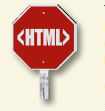
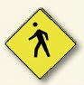
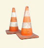

|
inizia sempre ogni pagina con un doctype. questo si arriva con il piede giusto con il browser, e con il validatore troppo. usa in ogni momento, a meno che realmente tu stai scrivendo html 401 o XHTML |
 |
L'elemento : Non deve essere mai dimenticato.
subito il doctype, l'elemento deve sempre essere il top, o elemento principale della tua pagina web. così dopo il doctype il tag dovrebbe finirla, di tutto ciò altro nella vostra pagina nidificato all'interno. |
 |
Ricordati sempre di usare emtranbi il tag e body sollamente all'interno di head o body puoi scrivere qualsiasi altro tag. questo vuol dire che qualsiasi altro elemento e incluso nella head e body(non sono ame
|
|
Alimenta il tuo head con il tuo codifica dei caratteri. il Browser vi ringrazierà e cosi lo farà l'utente lo leggerà da ogni parte del mondo. |
| che cosa è head senza title?
sempre dare il vostro head un title
elemento. è la legge. in caso contrario si comporta è l'unico posto si dovrebbe mettere uo title
meta e style elementi |
| fai atenzione a inserire l'elementi dove é assolutamente vietato
a. non inserire mai un tag all'interno di un'altro tag
b. all'interno  non é permesso inserire un'altro non é permesso inserire un'altro |

| verifica attributi
alcuni elementi sono richieste mandatori altri opzionale ad esempio il tag  non abbreve molto senso senza l'attributo "src" e dalla versione html 5 anche l'attributo è obbligatorio
devi diventare esperto nel riconoscere gli attributi richiesti mandatori e opzionali non abbreve molto senso senza l'attributo "src" e dalla versione html 5 anche l'attributo è obbligatorio
devi diventare esperto nel riconoscere gli attributi richiesti mandatori e opzionali |